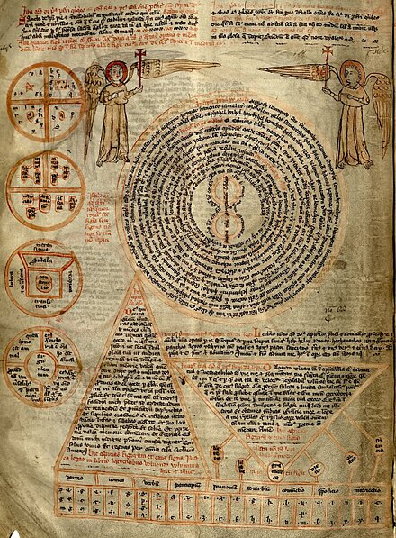
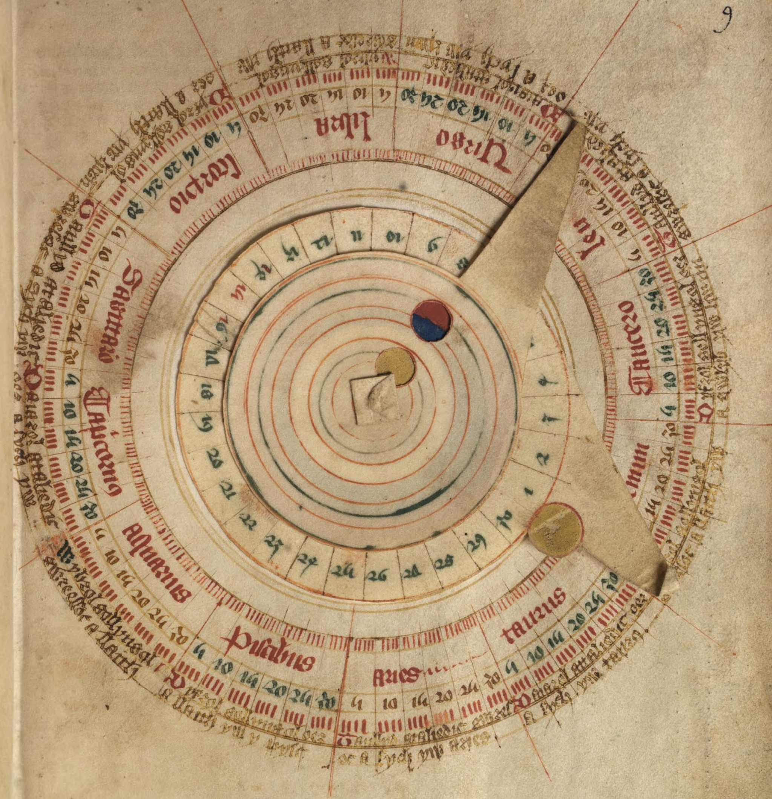
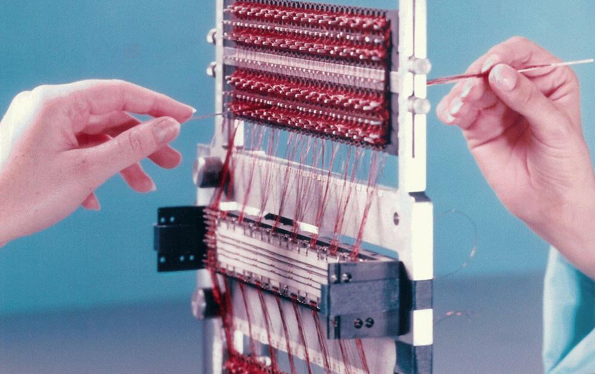
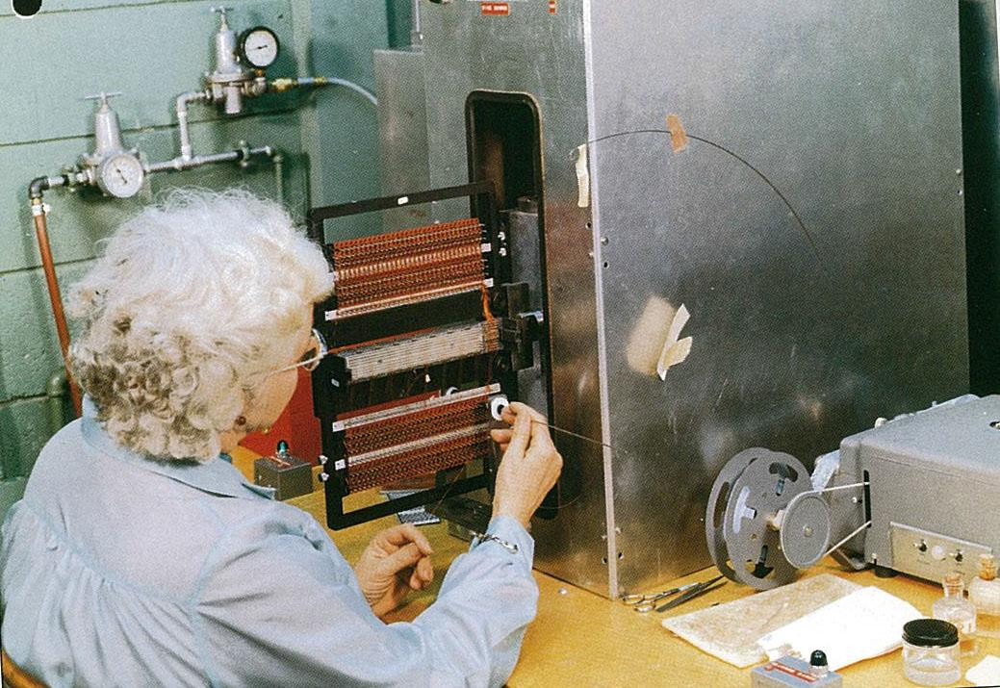
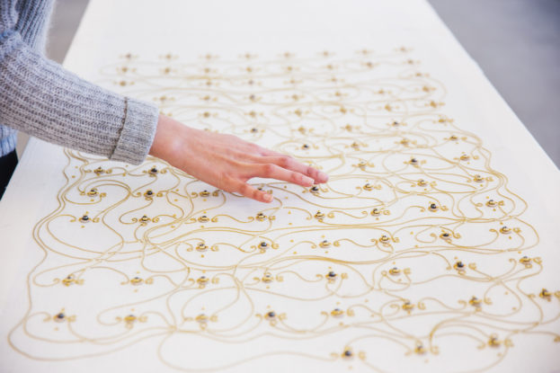

digital organism

Interfaces
"Technology is the human interface with the material world. However, the word is often used incorrectly to refer only to the massive, complex, specialized technologies of past decades, supported by massive exploitation of both human and natural resources." - Ursula K. Le Guin
"Tools become theories"
Walter Ong: Three moments that define culture: oral memory, writing, and digitality.
Memory
Memory game / semantic field (10 minutes)
What happens to memory when the dominant mode of storing information changes?
Giordano Bruno and the Art of Memory: images as 'textual' resources from spatial memory to aid rhetorical and dialectical purposes
Ars Notoria: 13th-century book with mental techniques for communicating with angels and other entities
Volvelle: an ancient analog computer
writing
"The boundaries of a book," wrote Michel Foucault long before hyperlinks and web data retrieval emerged, "are never clearly defined: beyond the tide, the first lines, and the last point, beyond its internal configuration and autonomous form, it is caught in a system of references to other books, other texts, other sentences: it is a node within a network." - Sadie Plant in Zeros+Ones
What does your piece reference? What are some of its nodes?
0101010101010101
●○ Jacquard was one of the first to automate a weaving process with punched cards
●○●○● Ada Lovelace built her analytical engine on the automated foundations of Jacquard's machine and in dialogue with Charles Babbage's work, who saw factories as prototypes for thinking machines. In the Analytical Engine, Babbage claimed it had two functions similar to a textile plant: storage and calculation.
●○●○●○●○ Alan Turing, with his universal machine, took the mechanical into the virtual
Charles Babbage's Difference Engine
Core memory weaving
LOL (Little Old Ladies) Memory
Embroidered Computer by Irene Posch

Khipu by Constanza Piña
encode/decode
Think of a medium you used in your childhood: TV, radio, newspaper, computer. What did you do while using it? Did you use it alone? Or with whom did you share that use?
How could you represent and store that memory in a textile? How could you represent and store it in a computer?
Possibilities and limits of the medium
"A medium is a medium is a medium. Therefore, it cannot be translated. Transferring messages from one medium to another always involves reforming them to fit new standards and materials." - Friedrich A. Kittler in Discourse Networks 1800/1900
What is lost when one way of writing, dialoguing, thinking, imagining, and remembering dominates? What is gained?
The og gatekeepers: Plato on writing, the luddites against the textile automatization, Bohumil Hrabal on the printing press.
- Khipu de Constanza Piña
- Return Home de Tyler Yin
- Affirmations for my Existence de Zainab Aliyu
- Establishing Secure Connection de Sarah Cheikah
- Estado Sólido del Mvseo Privado
Sus piezas
♡ Discusión sobre sus piezas ♡